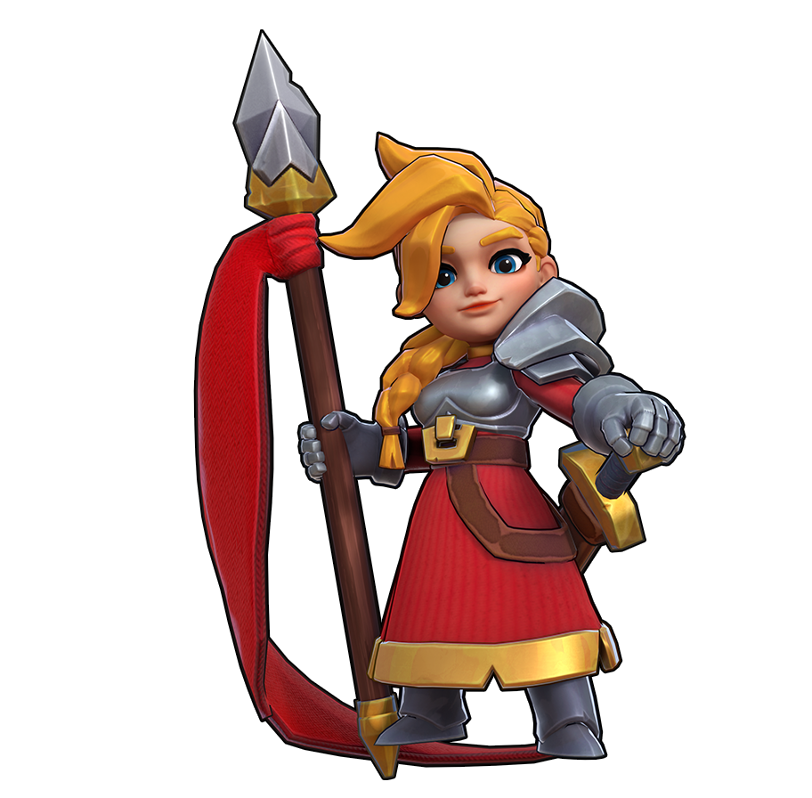

通算累計 王者
① ヨッピー
通算66万再生の絶対的先駆者・総合ゲーム界の重鎮

登録者数1.89万人
KS全本数45本
KS累計再生660,967
最大再生53,325
必殺技（強み）界隈随一のメガヒット製造力と親しみやすさ。2025年5月から参戦し、3万再生超4本・1万再生超23本を樹立。12分超の長尺を軽快なトークで飽きさせず、専用再生リストやメンバーシップまで基盤も盤石。キャラ顔アップ＋太字サムネの華やかさも抜群。
今後の伸びしろ概要欄（中央値29字）とチャプター（0%）が未活用なため、長尺動画に目次を足すだけで検索からのロングテール再生がさらに伸びる余地あり。他タイトルとの掛け持ちゆえ2026年は18本（中央値5,554回）とやや緩やかだが、本気を出せば再爆発の筆頭。
推しポイント：イベントの熱気と王道解説を楽しく追いたい人に！
チャンネルへ →